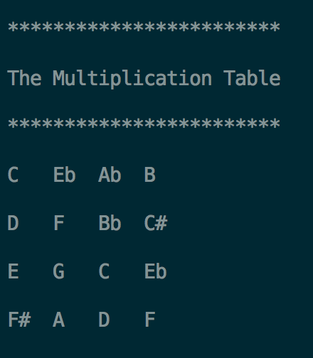

6. Construct a multiplication table
Pitch multiplication is a technique employed by Pierre Boulez. It was widely used in his music, most famously in Le marteau sans maître. Given two set of pitches, the result of pitch multiplication is the set of sums of all possible pairings of elements between the original pitch sets. For example, the result of a multiplication between the sets C-D-Eb and C-F-F# is the sum of C-D-Eb, F-G-Ab and F#-G#-A.
This program uses a nested for loop in C++ to achieve the multiplication of columns and rows. Below is a sample output multiplying C-Eb-Ab-B with C-D-E-F#.
7. Construct a multiplication table in rotation
The multiplication table is printed in rotation to the right in each row by default (the user can also choose to rotate the table to the left). The program used is the same as no. 6, but it passes in an argument to the function to indicated the direction of rotation.
8. Construct a multiplication table with inversion
The multiplication table is printed in inversion. It also uses the same program as no. 6, but uses an argument in the function (multiplying by -1) to inverse the addition process of the transposition.
9. Construct a multiplication table with inversion in rotation
A combination of both rotation and inversion, it also uses the same program as no. 6 but uses two arguments to control the output.